safety.viz release review 2026-10-03
safety.viz opens its shared parts to a second chart library, and the demo app now carries that library’s four biomarker charts in a tab of their own, with R’s tests one press away. No existing chart, setting or API changes: what is new is the Biomarkers tab, R started on request, the chart list’s format version 2, and the kit those charts are built on.
17 of 17 charts ready on the pilot study R on request: 13.26 MB, once the kit: 36 parts, public from v1.9.0 single file: 1,165,774 bytes, no requests safety.viz dev at 096cc26
What to look at
Patch release v1.9.1
A patch on everything below. Nothing is removed and no chart’s drawing changes.
data is refused, because the app keeps that name for its data view (safety.viz#197).bio.viz’s four charts sit beside Labs and vitals, ECG and Adverse events: the group comparison, the association scatter, the correlation matrix and the biomarker screen. They read the labs and vitals file as their results and the subject-level file as their participants, through the mapping already made, so a study mapped for the safety charts is mapped for these.
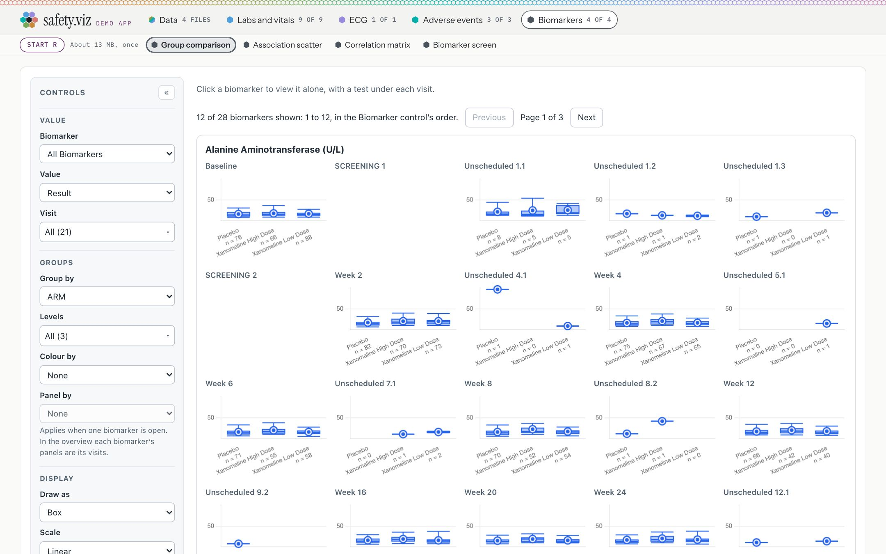
The Biomarkers tab on the pilot study. The tabs read 9 of 9, 1 of 1, 3 of 3 and 4 of 4, and the Data view says 17 of 17 charts ready. The group comparison opens on an overview of every measure at every visit, which prints no test: “12 of 28 biomarkers shown”.
What you should see
Try it
Open the demo appThe biomarker charts print statistics only from R. Until you ask for R, every biomarker chart draws and its statistics line says what starting R costs, and the page fetches nothing. One press starts R in your browser, once, from webR’s public host with gsm.bio’s statistics functions, and every biomarker chart uses that one R from then on.
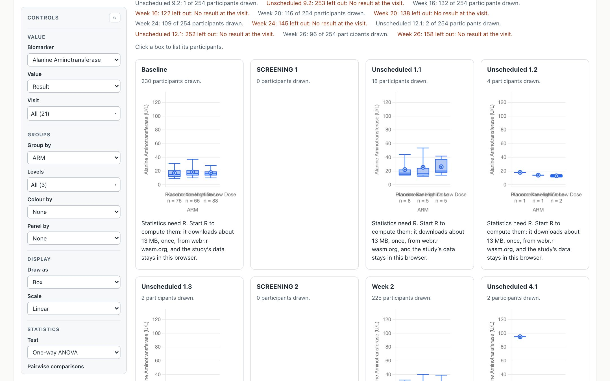
Alanine Aminotransferase chosen before the press. Under each visit: “Statistics need R. Start R to compute them: it downloads about 13 MB, once, from webr.r-wasm.org, and the study’s data stays in this browser.” No request had gone to R’s host at this point.
Just after the press: Starting R…
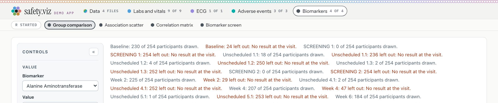
1.5 seconds later, here: R started.
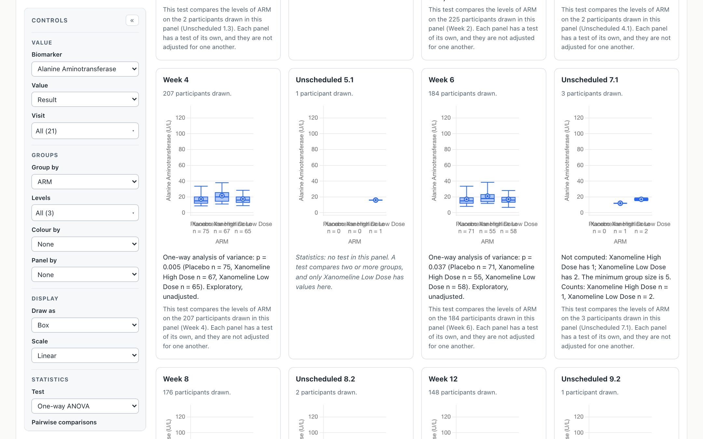
After the press, the chart keeps what you chose and prints R’s test under each visit. Where a visit has too few participants, it prints R’s reason, not a number.
| Visit | One-way ANOVA, across the three arms | n: Placebo, High Dose, Low Dose |
|---|---|---|
| Baseline | p = 0.515 | 76, 66, 88 |
| Week 2 | p = 0.127 | 82, 70, 73 |
| Week 4 | p = 0.005 | 75, 67, 65 |
| Week 6 | p = 0.037 | 71, 55, 58 |
| Week 8 | p = 0.013 | 70, 52, 54 |
| Week 12 | p = 0.380 | 66, 42, 40 |
| Week 16 | p = 0.170 | 67, 33, 32 |
| Week 20 | p = 0.050 | 61, 29, 26 |
| Week 24 | p = 0.517 | 57, 28, 24 |
| Week 26 | p = 0.252 | 50, 24, 22 |
Alanine Aminotransferase by arm on the pilot study, as the app printed them, each labelled exploratory and unadjusted. Desktop R, running the same gsm.bio statistics file on the app’s own data files, gives the same p-value and counts at every visit. Unscheduled visits with fewer than five in a group print R’s reason instead.
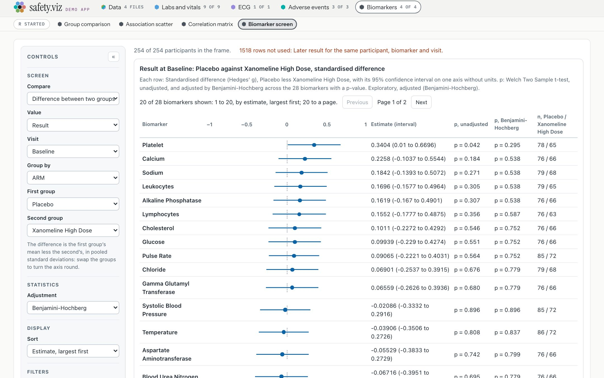
Another biomarker chart, the screen, on the same R with no second download: Placebo against Xanomeline High Dose at Baseline across 28 biomarkers. Platelet is first at 0.3404 (0.01 to 0.6696), p = 0.042 before adjustment and 0.295 after. No row survives the adjustment.
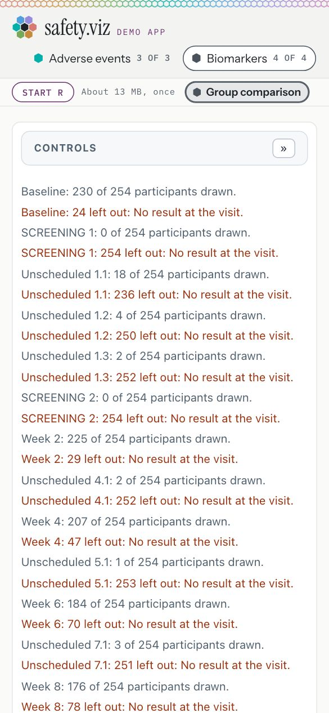
At 390 px, before the press.
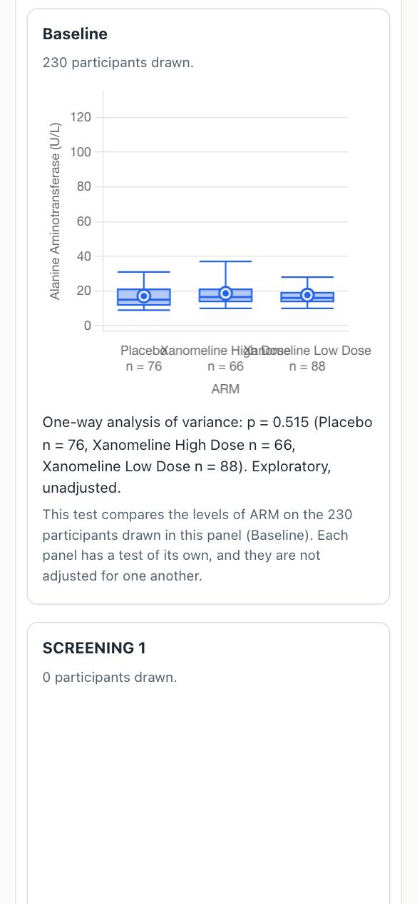
At 390 px, after it: R’s test at Baseline. Neither page scrolls sideways.
What you should see
Try it
Open the group comparison in the appThe single-file build carries bio.viz’s charts inline and still loads nothing, so it cannot start R. It has no Start R control, and its biomarker charts say why statistics are unavailable.
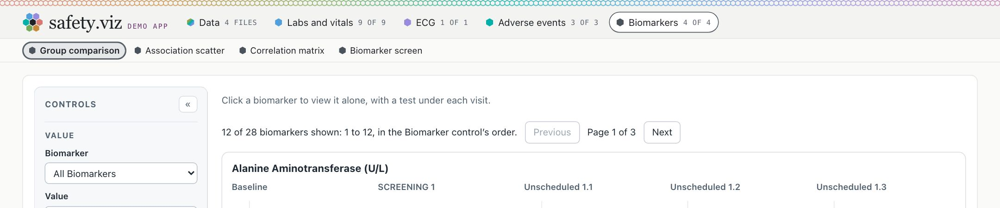
The single file, opened from disk with the network off and the pilot study’s four files dropped on it: the Biomarkers tab, and no Start R.
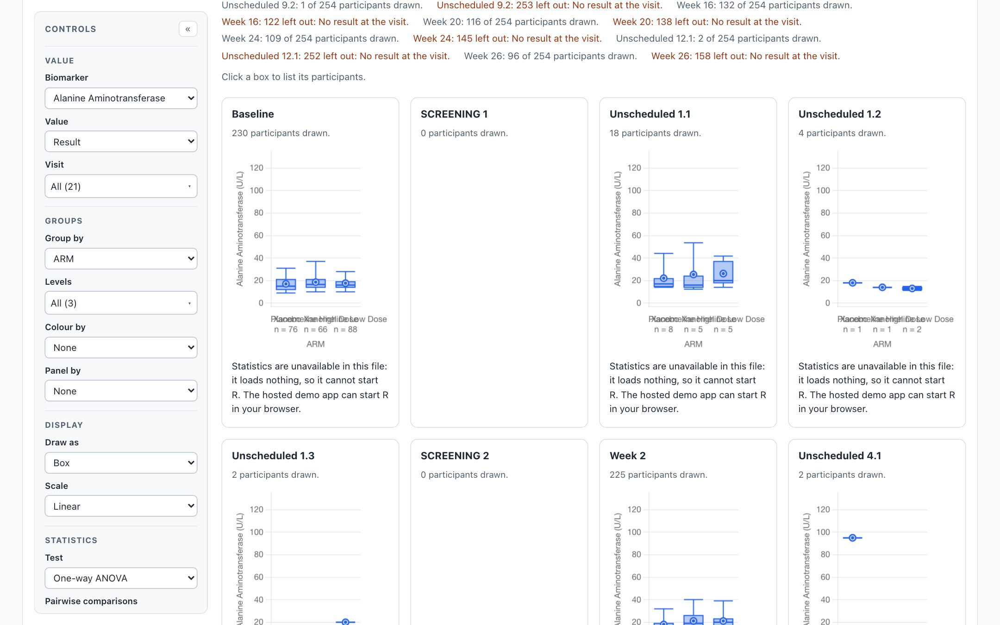
“Statistics are unavailable in this file: it loads nothing, so it cannot start R. The hosted demo app can start R in your browser.” The file is 1,165,774 bytes and made no request.
A page that mounts the demo app can hand it another chart library: its chart factories and its own chart list. The app lists those charts in a tab of their own, gives each a status, counts them, builds their settings and data from the loaded files and the mapping, and draws one at a time, as it does its own. To describe charts like these, the chart list’s format goes to version 2: an entry can name its library, the group it is listed under, and the named tables its chart takes. The thirteen safety charts’ entries mean what they meant.
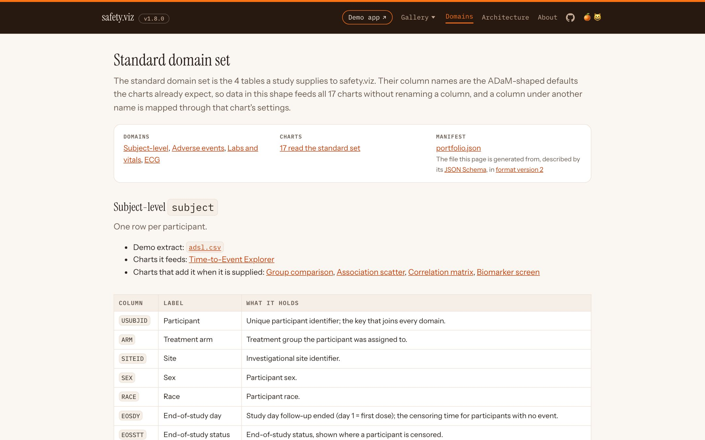
The Domains page: 17 charts read the standard set, from a manifest in format version 2. The subject-level domain now lists the four biomarker charts among those that use it when it is supplied.
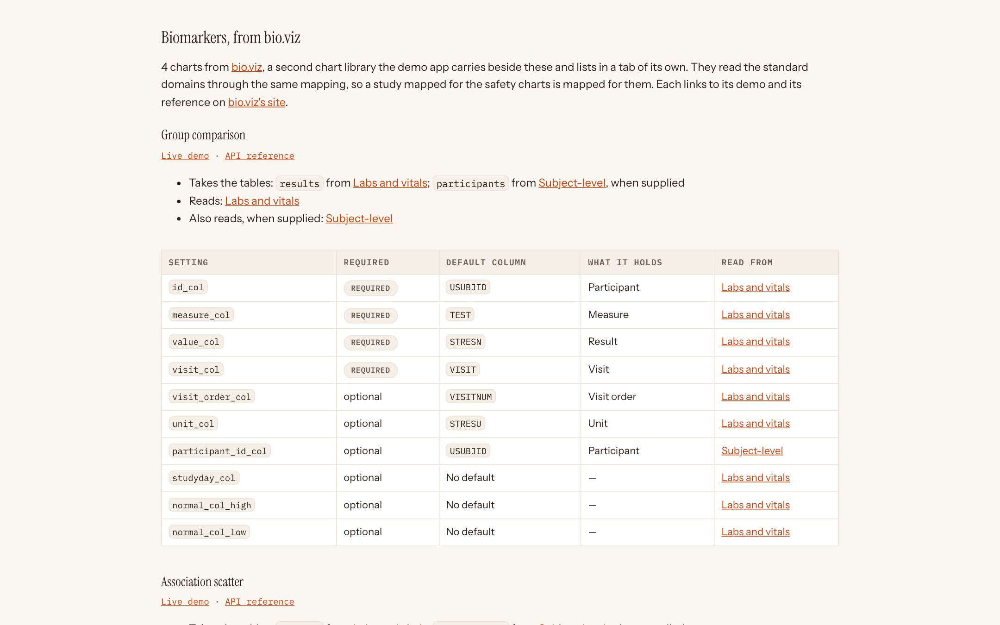
A section of its own, “Biomarkers, from bio.viz”: each chart with the tables it takes, its column settings and their defaults, and links to its demo and reference on bio.viz’s site.
Why it matters
Before this, the app knew only its own charts. Now any library that publishes a chart list in this format can join it, on the same files and mapping, without the app being rebuilt around it.
Try it
Open the Domains pageSafetyViz.kit hands out the parts every safety.viz chart is built from, so a library loaded beside it builds charts that look and behave the same, without a copy of that code drifting away: the control sidebar and its builders, the filter contract, the axis-limit helpers, the record listing, the participant rail, the box drawing, the measure list, the Kaplan–Meier estimator and the Chart.js the bundle already contains. Each member is the very function the charts call. bio.viz’s four charts are built on it.
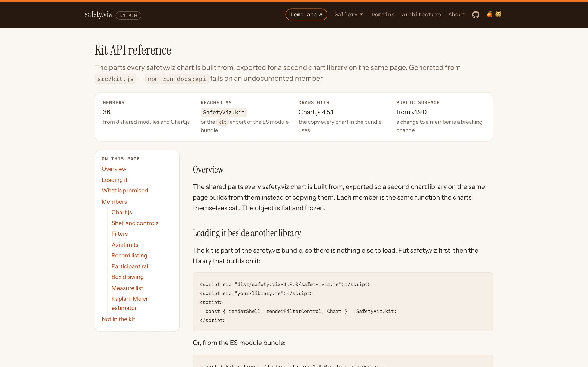
The kit’s reference: 36 members from 8 shared modules and Chart.js 4.5.1, reached as SafetyViz.kit.
The one commitment in this release
From v1.9.0 the kit is public surface: a change to any member’s name, signature, return value, or the elements and class names it produces is a breaking change. Adding a member is not. The kit, explained in one page, and its API reference.